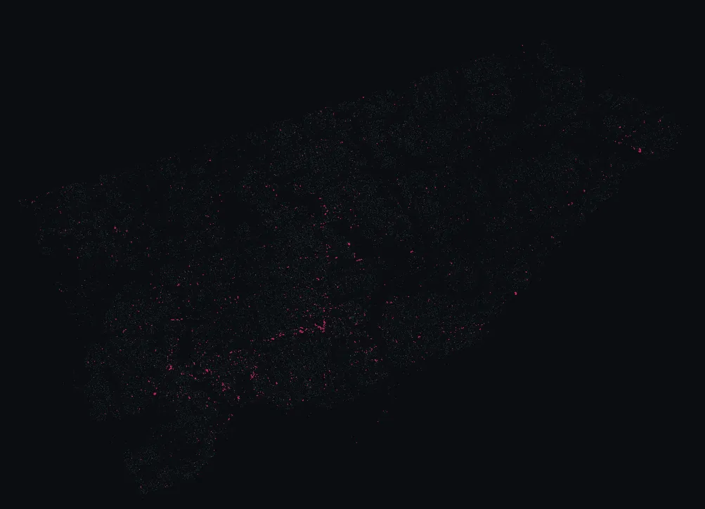

Species profile
Black Locust
Robinia pseudoacacia
2,265 on Toronto's streets — 0.33% of the city's catalogued canopy.

🌸 Blooms May 28 – Jun 10: white racemes, intensely honey-scented
🍁 Fall colour Oct 1 – Oct 20: yellow
Toronto history — Black locust — native to the Appalachian range, at the edge of its natural range here. Honey-scented white flowers in early June, extraordinarily rot-resistant wood. Planted sparingly; the 'Purple Robe' cultivar has pink flowers.
Robinia pseudoacacia, commonly known as black locust, is a medium-sized hardwood deciduous tree, belonging to the tribe Robinieae of the legume family. Another common name is false acacia, a literal translation of the specific name.
Where they cluster
| Neighbourhood | Trees |
|---|---|
| High Park-Swansea | 131 |
| Casa Loma | 114 |
| Bridle Path-Sunnybrook-York Mills | 98 |
| Edenbridge-Humber Valley | 69 |
| Etobicoke City Centre | 68 |
| Wychwood | 57 |
| Corso Italia-Davenport | 55 |
| Lambton Baby Point | 52 |
Notable specimens
- 182 cm DBH at 64 NORDEN CRES · view →
- 143 cm DBH at 26 MEADOWVALE RD · view →
- 141 cm DBH at 155 SANDRINGHAM DR · view →
- 139 cm DBH at 565 SCARLETT RD · view →
- 137 cm DBH at 25 HASSARD AVE · view →
- 136 cm DBH at 243 WARREN RD · view →
- 132 cm DBH at 19 DON RIDGE DR · view →
- 130 cm DBH at 6197 KINGSTON RD · view →